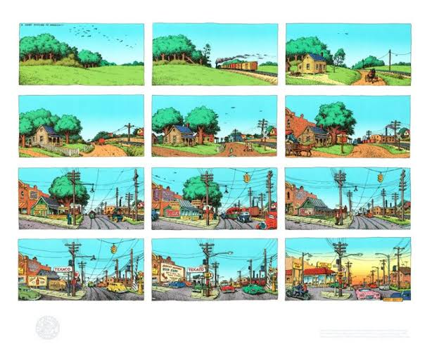
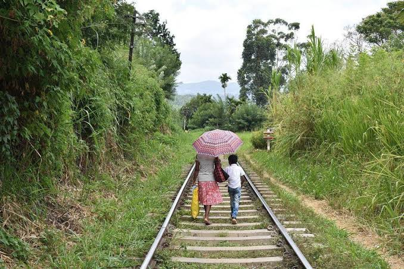
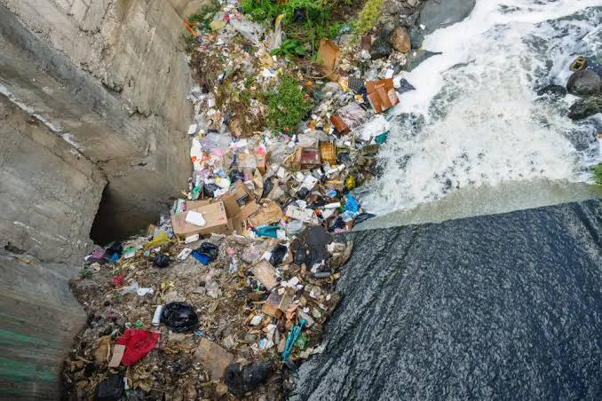
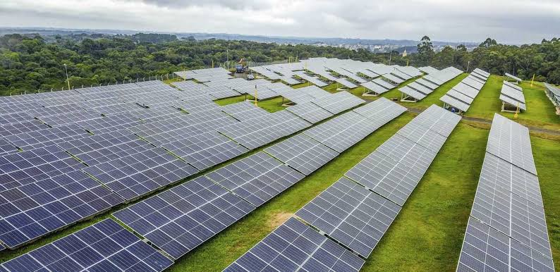

O que é a Urbanização em Áreas Rurais?
A urbanização em áreas rurais refere-se ao processo em que as regiões rurais, que tradicionalmente dependem da agricultura e atividades relacionadas, começam a adotar características urbanas. Isso pode incluir o crescimento de infraestrutura, industrialização e um aumento da densidade populacional.
Causas da Urbanização em Áreas Rurais
As principais causas da urbanização em áreas rurais incluem:
- Desenvolvimento econômico e industrial;
- Expansão urbana descontrolada de cidades próximas;
- Migração rural-urbana em busca de melhores oportunidades;
- Investimentos em infraestrutura, como estradas e energia elétrica.
Consequências da Urbanização em Áreas Rurais
A urbanização em áreas rurais pode trazer tanto benefícios quanto desafios, como:
- Aumento de empregos não-agrícolas e diversificação da economia local;
- Melhoria no acesso a serviços como educação, saúde e transporte;
- Perda de áreas agrícolas produtivas;
- Pressão sobre recursos naturais e serviços públicos.
Soluções para Mitigar os Efeitos Negativos
Algumas soluções para mitigar os impactos negativos da urbanização em áreas rurais incluem:
- Planejamento urbano sustentável, com foco em preservação ambiental;
- Incentivo ao desenvolvimento de tecnologias agrícolas avançadas;
- Criação de políticas públicas que protejam pequenos agricultores;
- Investimento em infraestrutura verde e energias renováveis.